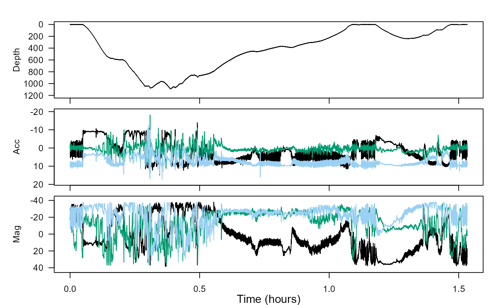
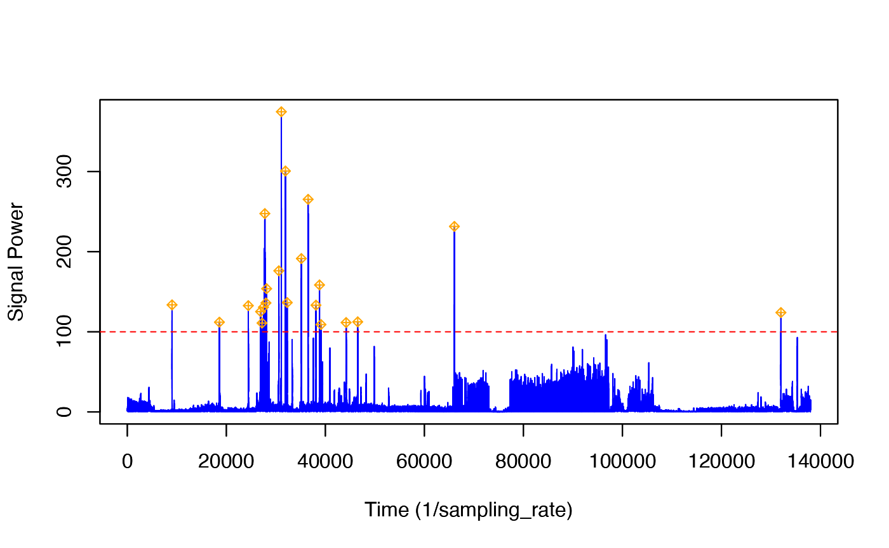
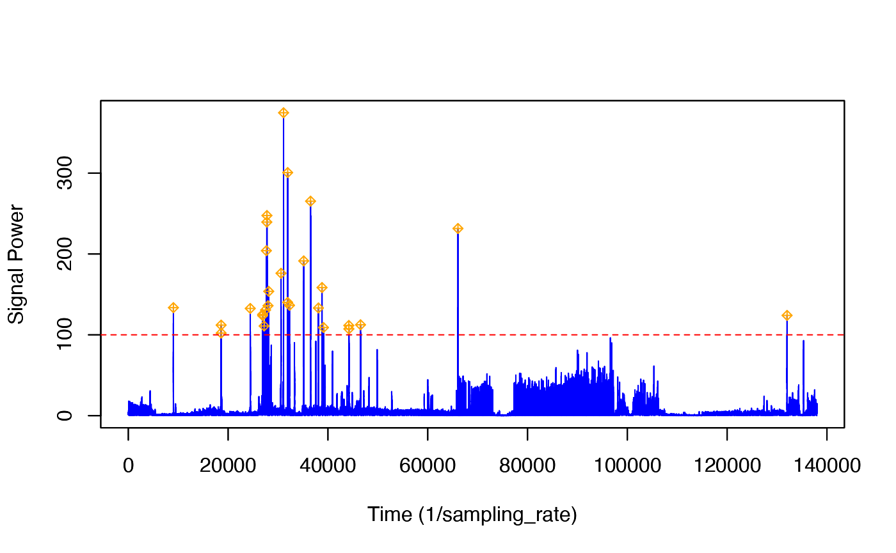

jerk-transients.RmdWelcome to the jerk-transients vignette! Thanks for getting some time to know our package. We hope it’s, thus far, all you’ve dreamed it would be.
In this vignette, you will use jerk to identify prey capture attempts.
Estimated time for this vignette: 20 minutes.
These practicals all assume that you have R/Rstudio installed on your machine, some basic experience working with them, and can execute provided code, making some user-specific changes along the way (e.g. to help R find a file you downloaded). We will provide you with quite a few lines. To boost your own learning, you would do well to try and write them before opening what we give, using this just to check your work.
Additionally, be careful when copy-pasting special characters such as _underscores_ and ‘quotes’. If you get an error, one thing to check is that you have just a single, simple underscore, and 'straight quotes', whether 'single' or "double" (rather than “smart quotes”).
If you’ve finished complementary-filtering within the same R session, skip to Acceleration transients, jerk and dynamic acceleration. If not, you’ll want to do this first section.
For this practical we will use data from a suction cup tag attached to the back of a beaked whale. This dataset is built into the tagtools package, so you can access it using system.file.
Write testset1.nc to the object bw, for “beaked whale”. Then use plott() to get a look at it.
library(tagtools)
bw_file_path <- system.file("extdata", "testset1.nc", package = 'tagtools', mustWork = TRUE)
bw <- load_nc(bw_file_path)
plott(X = list(Depth = bw$P, Acc = bw$A, Mag = bw$M))
This dataset contains a deep dive followed by a shallow dive. We want to infer the function of these by looking for locomotion effort and sudden changes in acceleration that could be indicative of prey capture attempts. We are also going to look for changes in swimming gait.
We want to look for indications of foraging during the two dives. Sudden changes (transients) in acceleration are often associated with prey capture attempts. One way to emphasise rapid changes in acceleration is by differentiating it to produce the jerk.
This is effectively high-pass filtering acceleration with a constantly-sloping filter—the higher the frequency, the more it is emphasised. Because we don’t know what kind of movement is involved in a prey capture attempt, we don’t know which axis of acceleration will be most relevant. It is safer then to just compute the magnitude of the jerk in all three axes to get a single vector (also called “norm-jerk”). That way, a peak in any or all axes will show up. njerk computes this from acceleration. Try running njerk on our acceleration data (where is it stored?) and writing the result to J. Then, once you also grab the sampling rate, you can plot this jerk data.
Where in the dive profile do the largest jerk transients (peaks) appear?
The largest jerk transients appear mostly at the bottom of the deeper dive.
Check out some of the biggest peaks to see how short they are.
The size and clarity of the jerk peaks depends on the sampling rate. We are using 25 Hz data. To see what you would get with 5 Hz data, try decimating the acceleration before computing the jerk:
str(bw$A, max.level = 1) # look at the data before decimation
Ad <- decdc(bw$A, 5) # decimate by 5 times. New sampling rate is 25/5 Hz
str(Ad, max.level = 1) # and after decimation#> [1] "results for str(bw$A, max.level = 1)"
#> [1] "------------------------------------"
#> List of 18
#> $ data : num [1:137976, 1:3] -1.85 -1.78 -1.73 -1.7 -1.64 ...
#> $ sampling : chr "regular"
#> $ sampling_rate : num 25
#> $ sampling_rate_unit: chr "Hz"
#> $ depid : chr "md13_134a"
#> $ creation_date : chr "30-Jul-2017 23:13:50"
#> $ history : chr "sens_struct"
#> $ type : chr "acc"
#> $ full_name : chr "Acceleration"
#> $ description : chr "triaxial acceleration"
#> $ unit : chr "m/s2"
#> $ unit_name : chr "meters per seconds squared"
#> $ unit_label : chr "m/s^2"
#> $ start_offset : num 0
#> $ start_offset_units: chr "second"
#> $ column_name : chr "x,y,z"
#> $ frame : chr "animal"
#> $ axes : chr "FRU"
#> [1] "results for str(Ad, max.level = 1)"
#> [1] "------------------------------------"
#> List of 18
#> $ data : num [1:27595, 1:3] -1.797 -1.484 -0.966 -0.28 0.339 ...
#> $ sampling : chr "regular"
#> $ sampling_rate : num 5
#> $ sampling_rate_unit: chr "Hz"
#> $ depid : chr "md13_134a"
#> $ creation_date : chr "30-Jul-2017 23:13:50"
#> $ history : chr "decdc(5)"
#> $ type : chr "acc"
#> $ full_name : chr "Acceleration"
#> $ description : chr "triaxial acceleration"
#> $ unit : chr "m/s2"
#> $ unit_name : chr "meters per seconds squared"
#> $ unit_label : chr "m/s^2"
#> $ start_offset : num 0
#> $ start_offset_units: chr "second"
#> $ column_name : chr "x,y,z"
#> $ frame : chr "animal"
#> $ axes : chr "FRU"Compute the decimated jerk from the decimated acceleration, and plot it with the jerk computed from the full bandwidth acceleration:
Jd <- njerk(Ad)
plott(X = list(Depth = bw$P$data, `25 Hz Jerk` = J, `5Hz Jerk` = Jd),
fsx = c(fs, fs, fs/5))Check out some of the obvious peaks around minute 20 to minute 30 to have a look at the ‘signal-to-noise’ in the jerk transients. How clear are the jerk transients in the decimated signal compared to the original data rate? What does this tell you about the frequency content in the transients?
The jerk transients are definitely less clear in the decimated signal compared to the original data rate. Consider the peak near 0.75 hours in the original (25 Hz)signal: there is no corresponding peak near 0.75 hours in the decimated signal. Similarly, consider the two peaks near 1.5 hours in the original. Though the jerk is higher around this area in the decimated signal, the peaks are quite unclear. This tells us that it is important to have high-resolution data—since the acceleration is changing so quickly, it is possible to stop observing for just 0.2 seconds (as is true of 5 Hz data), and miss an important event.
Put concisely, the jerk signal has a lot of high frequency content.
To find potential prey capture attempts, we need to run a detector on the norm-jerk signal. Although it is easy to see peaks by eye in the data, detectors require some information to do a good job: they need to know the threshold above which a peak is really a peak and the blanking time, i.e., the minimum time that must elapse after a detection before another detection can happen.
The tagtools includes interactive peak detectors that allow you to choose a threshold and see the effect this has on which transients are detected. We will use a blanking time of 5s, i.e., we expect that the shortest time between prey captures is 5s:
pks <- detect_peaks(J, fs, bktime = 5) # 5s blanking time, threshold is interactive#> [1] "GRAPH HELP:"
#> [1] "For changing only the thresh level, click once within the plot and then push enter"
#> [1] " to specify the y-value at which your new thresh level will be."
#> [1] "For changing just the bktime value, click twice within the plot and then push enter"
#> [1] " to specify the length for which your bktime will be."
#> [1] "To change both the bktime and the thresh, click three times within the plot:"
#> [1] " the first click will change the thresh level,"
#> [1] " the second and third clicks will change the bktime."
#> [1] "To return your results without changing the thresh and bktime from their default"
#> [1] " values, simply push enter."
Follow the instructions in the console to change the threshold. You need to pick a threshold that excludes most of the jerk transients during the strong propulsion locomotion in the ascent but that still detects most of the jerk transients during the bottom part of the deep dive. (Balancing false detections and missed detections is often not easy in a detector and is a matter of finding a trade-off that works for your application.) In the figure given, we’ve set the threshold to 100.
This function returns a list of information about the detected peaks. For each detection, the start and end times are reported (in seconds), along with the time at which the peak occurred and the height of the peak. Finally, the selected threshold and blanking time are reported. You can plot the height and time of each detection along with the dive profile as follows:
plott(X = list(Depth = bw$P))
# note: the code below assumes your plott x-axis is in hours.
# if it were in minutes use /60 instead of /3600, etc.
points(pks$peak_time/fs/3600, bw$P$data[round(pks$peak_time)], pch = 8)Bearing in mind that some of the jerk peaks might come from strong locomotory strokes, is there strong evidence for foraging in the deep dive? Is there strong evidence for foraging in the shallow dive?
Yes, there is strong evidence for foraging in the deep dive, since with all the jerk peaks present there, there are likely some strong locomotory strokes in it. These strong locomotory strokes are, in turn, evidence of foraging. However, there is almost no evidence for foraging in the shallow dive, since there are no jerk peaks there.
Now, if you have done complementary-filtering recently, here is one more question for you. Adding your inference from complementary-filtering about locomotion in the shallow dive, what can you conclude about the general behaviour of the animal in the shallow dive? Namely, is it resting, traveling or foraging? Write down your marvelous thoughts.
We know now that the whale is likely not foraging in the shallow dive, since the sudden movements (jerk peaks) are happening only in the earlier dive. Additionally, though the animal is not accelerating quickly (striking/flinching), it is still moving (locomotion). So it seems more likely to be traveling than resting.
You’ve learned how to accentuate quick movements of an animal using jerk, and used the accentuated picture to gain understanding about the animal’s behaviour.
And with that, congrats! You bounced through this vignette.
If you’d like to continue working through these vignettes, acceleration-filtering and magnetometer-filtering are very logical choices. You’ll gain more insight into the same dataset, and other ways of analysing locomotion, by doing these.
Animaltags home pages: http://animaltags.org/ (old), https://animaltags.netlify.app/ (new), https://github.com/stacyderuiter/TagTools (for latest beta source code), https://stacyderuiter.github.io/TagTools/articles/TagTools (vignettes overview)